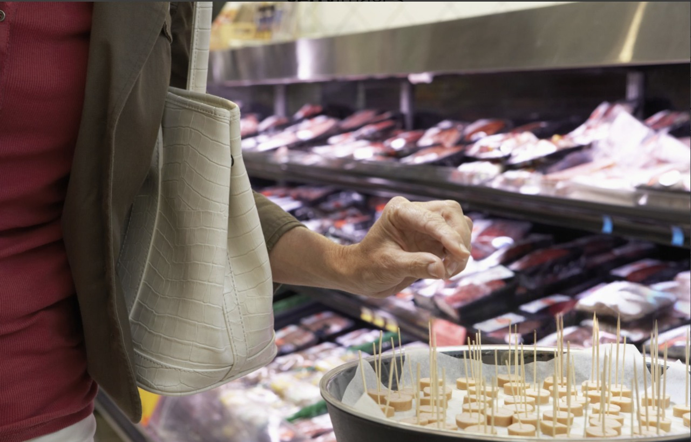
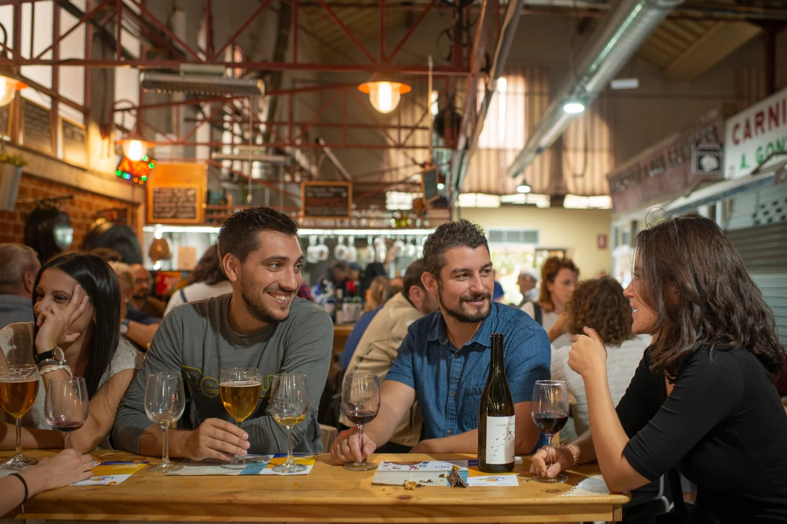

Diseñamos y activamos experiencias de marca dentro de mercados municipales tipo Chamberí para conectar tu producto con un público que compra, prueba y recomienda en el mismo momento de la visita.
Los mercados tradicionales combinan tráfico constante, tiempo de permanencia alto y un entorno gastronómico donde el producto se descubre, se prueba y se compra en el mismo lugar.
Alcanzas a vecinos y visitantes que acuden al mercado a comprar, no a pasear. Impactos de alta calidad en un contexto de decisión de compra.
Puestos de producto fresco, espacios gastronómicos y ocio convierten el mercado en un lugar perfecto para degustaciones, maridajes y demostraciones de producto.
Combinamos presencia en las pantallas de Canal Mercado con acciones presenciales en los pasillos para maximizar recuerdo y conversación.
Diseñamos cada acción para que puedas medir resultados: impactos, muestras entregadas, leads captados y ventas incrementales estimadas durante los días de activación.
Te acompañamos de principio a fin: desde la idea creativa y la selección del mercado hasta la producción, la coordinación con el recinto y la medición de resultados.
Definimos objetivo, mensaje y dinámica (degustación, sampling, showcooking, juego, sorteo) y seleccionamos el mercado y las ubicaciones más adecuadas.
Nos encargamos de materiales, permisos, staff y coordinación con el mercado para que el montaje y la activación no interrumpan el funcionamiento de los puestos.
Ejecutamos la acción en el mercado, amplificada por las pantallas de Canal Mercado con creatividades adaptadas al entorno y al público.
Recibirás un informe con datos clave, fotografías, aprendizajes y recomendaciones para siguientes activaciones o escalado a otros mercados.
Adaptamos el formato a tu categoría y objetivos: desde lanzamientos de producto hasta campañas de construcción de marca o activaciones tácticas de corta duración.
Degustaciones, recetas en directo, combos con puestos del mercado y mecánicas “compra y participa” para incentivar prueba y repetición.
Activaciones de proximidad para marcas que quieren ganar presencia en el distrito, vinculando su relato al día a día del mercado.
Acciones sobre alimentación saludable, sostenibilidad o consumo responsable, con talleres, información y activaciones lúdicas para familias.
Cuéntanos tu objetivo y te proponemos un formato de acción presencial en mercados tipo Chamberí, integrado con las pantallas de Canal Mercado y listo para presentar a tu cliente.
También podemos adaptarlo a otros mercados del circuito Canal Mercado.